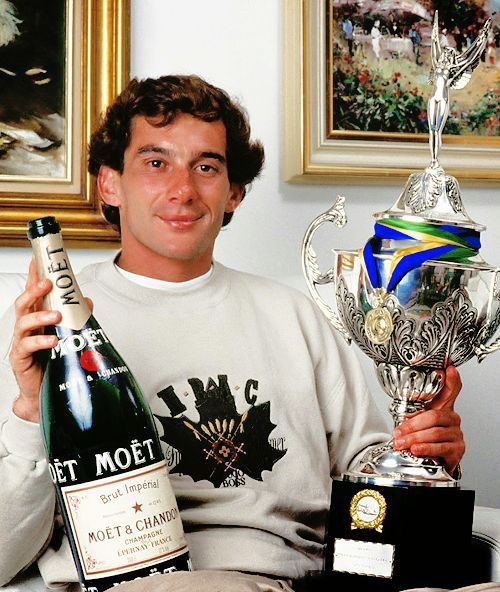
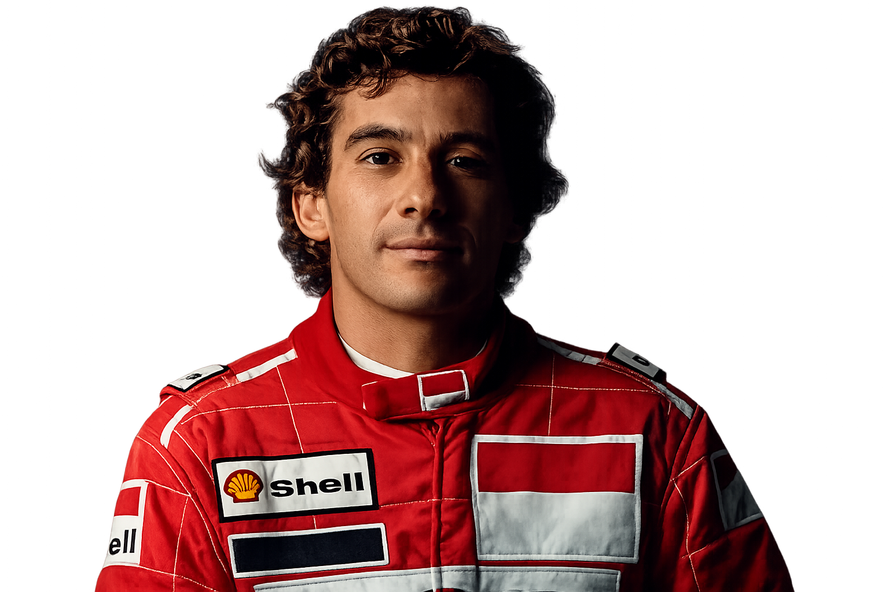
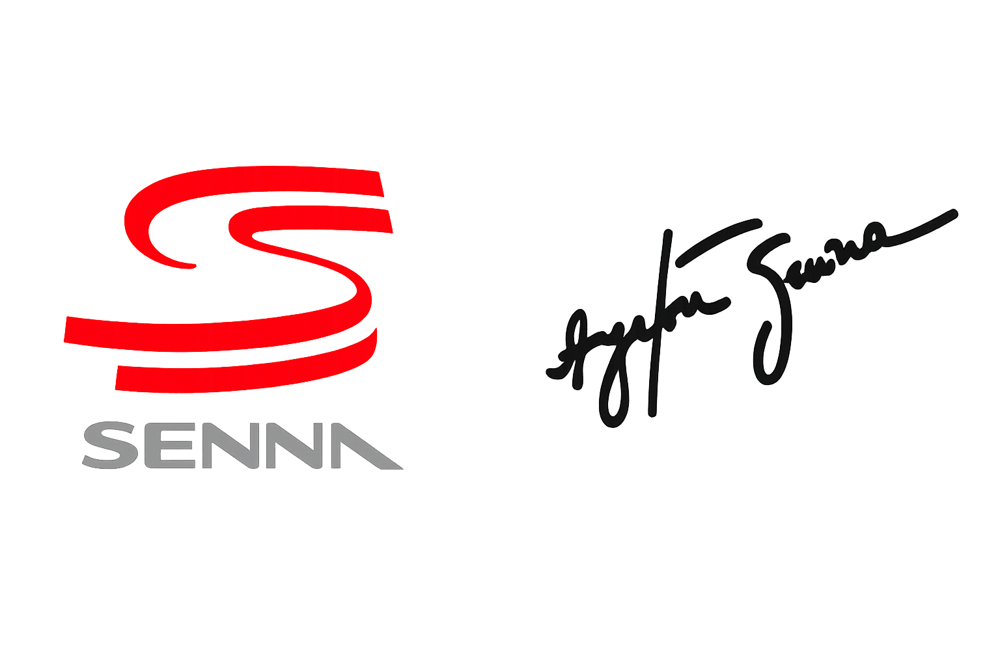
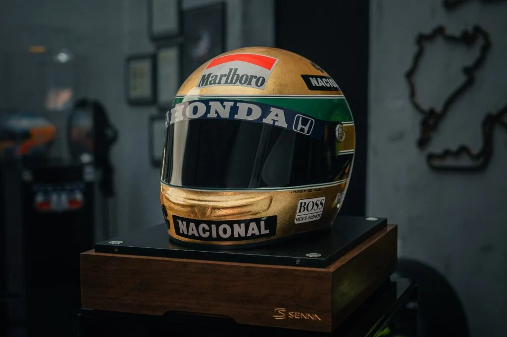
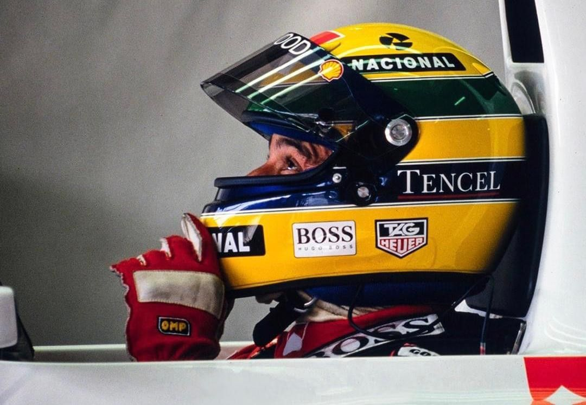
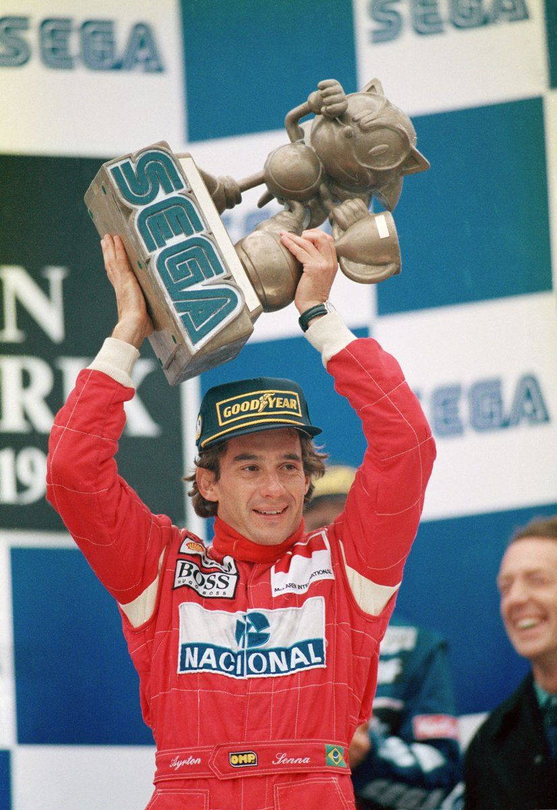
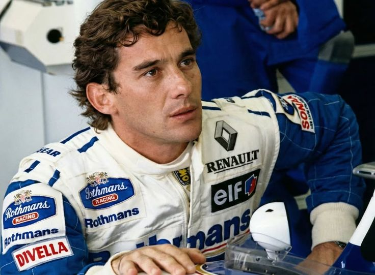

Ayrton Senna foi um dos maiores pilotos da história da Fórmula 1, conhecido por sua velocidade, talento e determinação nas pistas. Tricampeão mundial, Senna marcou gerações com pilotagens inesquecíveis, principalmente em corridas na chuva, onde demonstrava um controle impressionante do carro. Além do sucesso nas pistas, também ficou admirado por sua humildade, carisma e pelo impacto social que deixou no Brasil. Seu legado continua vivo no automobilismo, sendo símbolo de paixão, superação e excelência no esporte.


O capacete de Ayrton Senna se tornou um dos maiores símbolos da história da Fórmula 1. Com as cores verde, amarelo e azul representando a bandeira do Brasil, o design simples e marcante transmitia velocidade, coragem e identidade nacional. Mais do que um equipamento de corrida, o capacete virou um ícone do automobilismo, eternizado pelas ultrapassagens históricas, voltas lendárias e pela conexão única que Senna tinha com os fãs brasileiros. Até hoje, suas cores são reconhecidas no mundo inteiro como símbolo de talento, determinação e paixão pelas pistas.



A passagem de Ayrton Senna pela McLaren foi uma das eras mais icônicas da história da Fórmula 1. Entre 1988 e 1993, Senna conquistou três campeonatos mundiais e se tornou uma lenda do automobilismo com sua velocidade impressionante, habilidade na chuva e mentalidade extremamente competitiva. Ao lado de grandes carros da McLaren e motores Honda, ele protagonizou corridas inesquecíveis e uma das maiores rivalidades da F1 contra Alain Prost.

Na lendária equipe Williams Racing, Ayrton Senna viveu um dos capítulos mais marcantes da história da Fórmula 1. Em 1994, o tricampeão brasileiro chegou à Williams cercado de expectativas, levando sua velocidade, talento e determinação para uma das equipes mais fortes da categoria. Mesmo enfrentando dificuldades de adaptação ao carro naquele início de temporada, Senna demonstrava sua busca constante pela perfeição e sua paixão intensa pelas corridas. Sua trajetória na Williams acabou se tornando eterna na memória dos fãs, simbolizando coragem, dedicação e o legado de um piloto que mudou para sempre a história do automobilismo mundial.

A morte de Ayrton Senna marcou profundamente a história da Fórmula 1 e do esporte mundial. No dia 1º de maio de 1994, durante o Grande Prêmio de San Marino, no circuito de Autodromo Internazionale Enzo e Dino Ferrari, Senna sofreu um grave acidente enquanto pilotava sua Williams Racing. O impacto aconteceu na curva Tamburello e chocou fãs, equipes e pilotos ao redor do mundo.